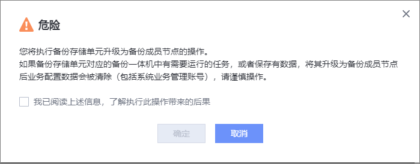

OceanProtect支持将OceanProtect对应的备份存储单元升级为成员节点。请参考本节操作。
前提条件
- 主节点已添加内部通信网络平面，且待升级的备份存储单元至少预留2个IP地址。
- 待升级的备份存储单元对应OceanProtect与主节点为相同版本。
- 待升级的备份存储单元对应OceanProtect未被添加到其他复制集群/多域集群/备份存储单元中。
- 待升级的备份存储单元对应OceanProtect的内部通信网络平面IP地址需要与主节点内部通信网络平面IP地址连通。
- 待升级的备份存储单元对应OceanProtect上没有正在进行的任务。
- 已下载备份存储单元对应OceanProtect“服务端证书”类型的CA证书，并导入主节点，类型选择为“备份集群/多域集群/复制集群”。导入CA证书的操作请参见《OceanProtect 备份一体机 1.5.0-1.6.0 安全配置指南》中的“下载证书”和“导入证书”章节。
注意事项
- 只支持将OceanProtect对应的备份存储单元升级为成员节点。
- 如果OceanProtect上有需要运行的任务，或者保存有数据，将其对应的备份存储单元升级为成员节点后业务配置数据会被清除，请谨慎操作。
- OceanProtect X3000备份一体机对应的备份存储单元不能升级为OceanProtect X6000/X8000/X9000备份一体机的成员节点。OceanProtect X6000/X8000/X9000备份一体机对应的备份存储单元也不能升级为OceanProtect X3000备份一体机的成员节点。
操作步骤
- 选择。
- 单击“备份存储单元组”。
- 选择“备份存储单元”。
- 在某个备份存储单元所在行单击。
- 在右侧弹出的窗口中填写成员节点的信息，参数说明请参见表1。
- 单击“确定”。
- 系统弹出“危险”提示框，确认提示信息无误后，勾选“我已阅读上述信息，了解执行此操作带来的后果”，单击“确定”。
